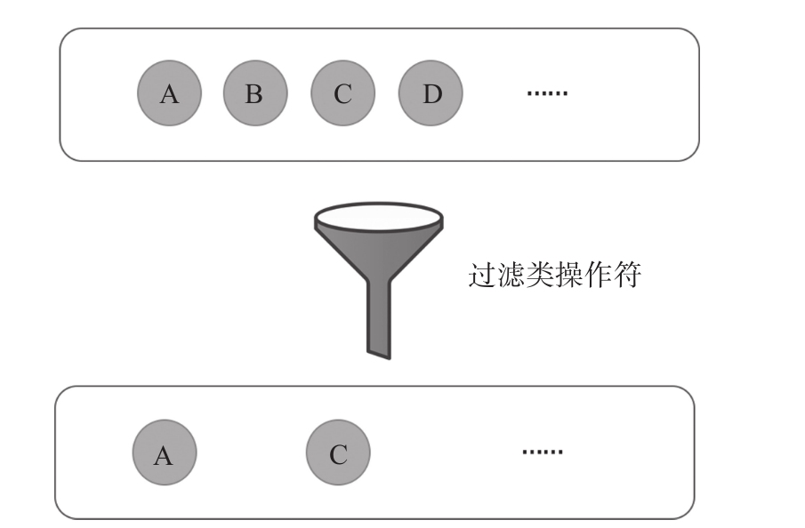

过滤类操作符 最基本的功能就是对一个给定的数据流中每个数据判断是否满足某个条件，如果满足条件就可以传递给下游，否则就抛弃掉。
过滤类操作符就像是一个过滤功能的漏斗，它会产生一个新的Observable对象，新产生的Observable对象中数据源自上游Observable，但并不是所有上游Observable中的数据都能有机会进入新产生的Observable对象，如图7-1所示。

图7-1 过滤类操作符示意图
判断一个数据是否有资格进入下游，用的就是“判定函数”，“判定函数”返回true代表可以进入下游，否则就会被淘汰。
几乎所有的过滤类操作符都有判定函数参数，此外，有的过滤类操作符还可以接受一个函数“结果选择器”（result selector），这个“结果选择器”的作用是定制传给下游的数据，下面是一个“结果选择器”函数的例子：
function resultSelector(value, index) {
return [value, index];
}
如果把上面的resultSeletor函数传递给某个过滤类操作符，每次调用resultSelector时，参数value会是被选中的上游Observable的值，而index就是这个值在上游Observable中的序号，这个resultSeletor只是简单地把value和index组成一个数组返回，那么使用这个resultSelector的过滤类操作符吐出的就会是这样的一个一个数组。
如果不指定“结果选择器”函数，可以认为过滤类操作符使用了一个默认的“结果选择器”，代码如下：
function defaultResultSelector(value, index) {
return value;
}
上面这个defaultResultSelector就完全忽视index参数，直接把value返回，这样，使用默认“结果选择器”的过滤类操作符传给下游的数据就没有做任何转化。
因为选择类操作符接受“结果选择器”参数，所以实际上这类操作符不只是做“过滤”的工作，也可以做数据转化的工作。当然，这种数据转化并不是最强大，关于数据转化会在第8章详细介绍。
下面先从最名副其实的filter来介绍过滤类操作符。